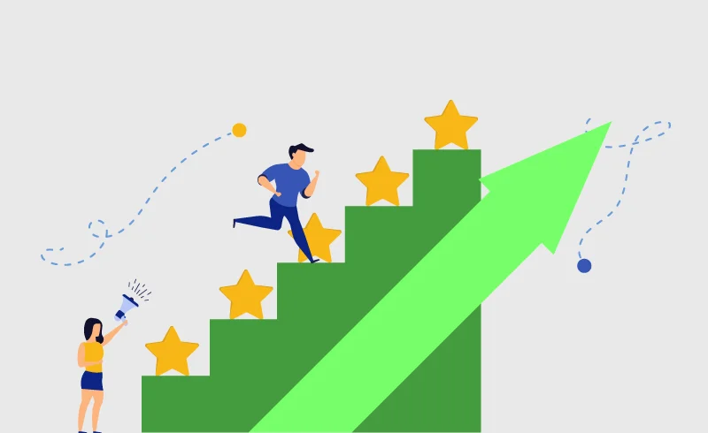

Consejos para mejorar
Escuchar a los profesionales te ayudará a evitar errores comunes y avanzar más rápido.
- Constancia: La clave está en no rendirse.
- Descanso: Dormir bien permite que tus músculos se regeneren.
- Calentamiento: Nunca lo omitas.
No escuchar al cuerpopuede llevarte a lesiones.
"No tienes que ser el mejor, solo tienes que ser mejor que ayer."
Si puedes soñarlo, puedes lograrlo
— cita inspiradora para cada entrenamiento.
Recuerda lo que significa FCM y cómo calcularla.
La cafeína puede mejorar el rendimiento, pero en dosis moderadas (máximo 400mg/día).
La mente influye en el cuerpo: Disciplina mental
Pregunta a nuestros entrenadores certificados:Email: entrenadores@gimnasiosaludyfuerza.com